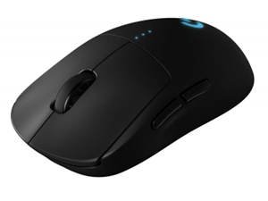

Mysz
Opis: Mysz komputerowa to urządzenie wejściowe służące do sterowania kursorem na ekranie. Umożliwia klikanie, przeciąganie i wybieranie elementów. Najważniejsze cechy to czułość (DPI), liczba przycisków oraz typ sensora. Ma wpływ na wygodę pracy i precyzję, szczególnie w grach. Przykłady to Logitech G502 Hero, Razer DeathAdder V2 czy SteelSeries Rival 3.
